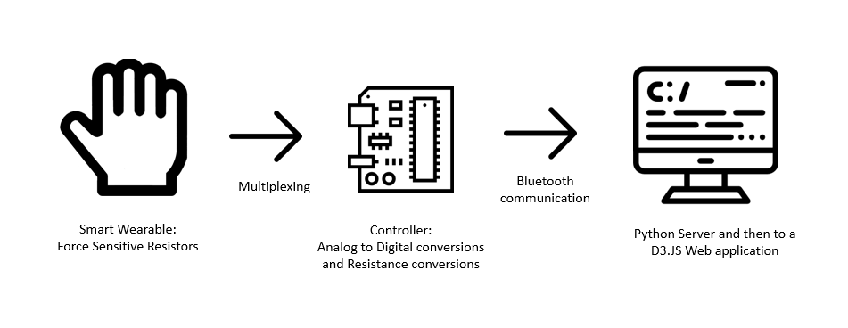
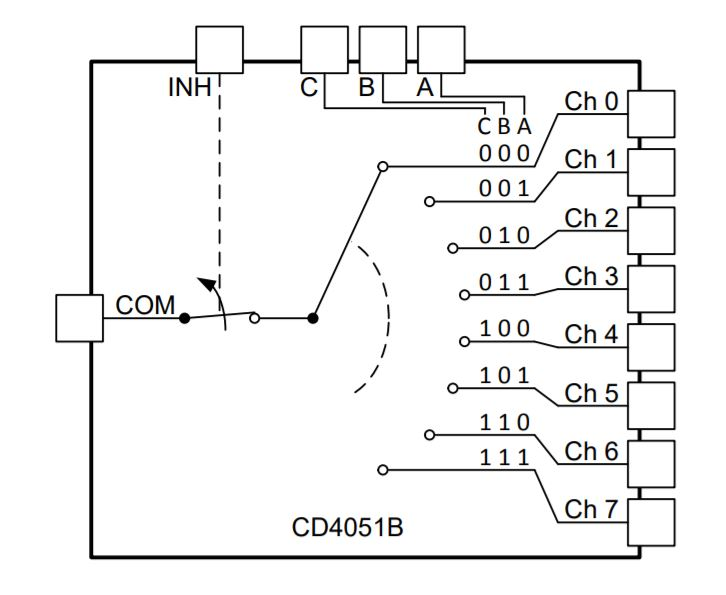
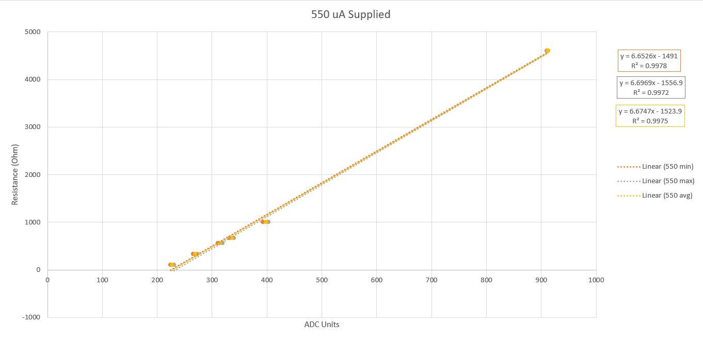
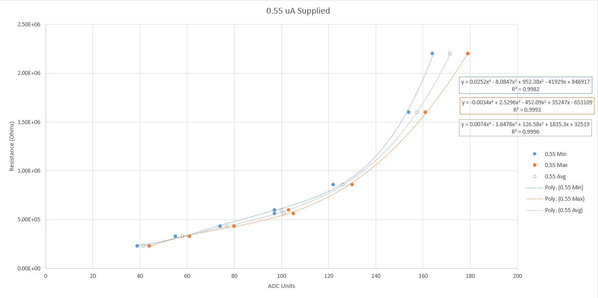
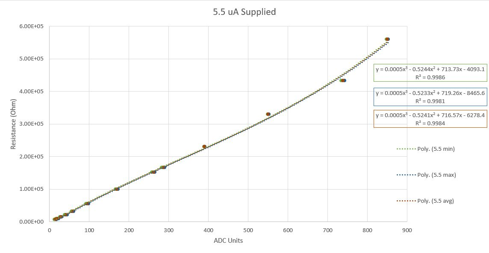
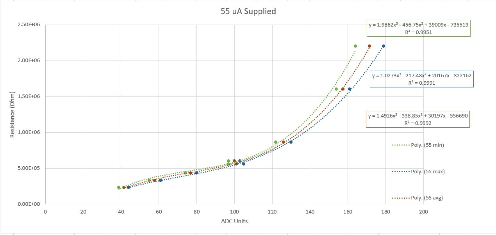
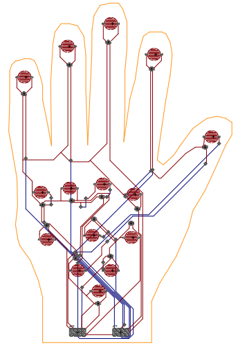

High Level Design
Figure 1: Flowchart of our project's design.
Hardware
Initial testing of the hardware began with identifying how the force sensitive resistors (FSR) work. There were two methods that we explored to power the FSR's. The first was to put the FSR in series with the on board power supply of the PIC32. The other end of the FSR was connected to a pull down resistor of 10 kΩ then to ground. A pin which was directly connected to the ADC was placed in parallel with the 10 kΩ resistor. This configuration would allow for us to measure the resistance of the FSR by measuring the voltage across the 10 kΩ resistor and solving the following back calculation:
$$ V = I(R_{FSR} + R_{10k}) $$
were V = 3.3V and I is equal to the voltage drop across the 10 kΩ resistor divided by the resistance (this voltage is read from the ADC). Solving for the FSR resistance yields the following equation:
$$ R_{FSR} = \frac{(5-V_{10k})R_{10k}}{V_{10k}} $$
This method worked well and was able to accurately read resistance values between 10 kΩ to 100 kΩ. Theoretically, the FSR should have been able to measure 0 resistance, however, the ADC saturated around 10 kΩ. This seemed to be fine for our purposes since, according to the force vs pressure curves provided by the FSR manufacturer, the maximum force that the sensors could accurately measure corresponded to a resistance around 20 kΩ.
The second method that we explored made use of the Charge Time Measurement Unit (CTMU) which is internal to the PIC32. The circuitry for this method was not as complicated as the voltage divider. Since the CTMU supplied the current through the ADC, the FSR only needed to be connected to the ADC in one end and grounded on the other. The CTMU has 4 current settings that it can supply, each producing different resolutions of resistance. These values are as follows:
| 550 uA | 0.55 uA | 5.5 uA | 55 uA | |
|---|---|---|---|---|
| Min (kOhm) | 0 | 0 | 0 | 0 |
| Max (kOhm) | 6 | 6000 | 600 | 60 |
Table ??: The theoretical minimum and maximum resistance values that can be read for each supplied current are tabulated above.
We then tested both methods using the mux so that we could connect multiple sensors via one ADC channel. The mux had 8 different channel input/outputs which needed to be selected by toggling 3 channel select bits (A,B, and C). By connecting the ABC pins of the mux to the PIC32, we were able to toggle the channel that was directly connected to the communication pin of the mux.Thus, for the CTMU method, the current would flow through the COM pin into the selected channel which is connected to the FSR. For the voltage divider method, the direct ADC input was replaced with a connection to one of the mux channel inputs. Due to internal resistance in the mux, we found that the resistance values we were reading without the mux had changed. This meant that we had to re-characterize the readings for both methods.
Figure ??: Schematic of the MUX we used.
To re-characterize the resistance scale for the mux, we took resistors of known value and recorded the corresponding ADC value. However, we did not want to do this for both methods and decided to cut one out. Since the circuitry of the voltage divider was a little more complicated, and we were able to achieve a wider range of resistance with the CTMU, we decided to proceed with the CTMU method to power the FSRs.
To characterize the new CTMU resistance we placed resistors of known resistance into the mux channels. We did this for all four current options which produced the following resistance vs ADC curves:
Figure ??: Resistance versus ADC values curves for 550 microamps through the MUX.
Figure ??: Resistance versus ADC values curves for 0.55 microamps through the MUX.
Figure ??: Resistance versus ADC values curves for 5.5 microamps through the MUX.
Figure ??: Resistance versus ADC values curves for 55 microamps through the MUX.
We determined that we would not be able to use the 0.55 microamp CTMU supply to power these resistors. As shown in the 0.55 microamp supplied curve, the ADC saturated around 200 ADC units. This meant that we were not able to get accurate readings using this current. Thus, we decided to only use the remaining current levels.
This lead directly into the design of the PCB schematic that would serve as the gloves circuitry. Thus, we moved on from the original FSRs provided by Adafruit to adhesive FSRs specifically made for the PCB.
Figure ??: Eagle CAD of the PCB is shown above. Note how each sensor will be in series with a power rail and ground rail.
The purpose of this PCB was to serve as the primary interface for the pressure sensors on the glove. These sensors were wired directly into the muxes input/output channels of the mux (7 sensors on each mux)
To setup the HC-06 for bluetooth communication, we made use of the UART pins on the PIC32 (Rx: RA1, Tx: RB10). We first determined whether the UART transmissions actually worked using a serial cable. Once we determined that this was functioning correctly, we moved onto setting up the bluetooth module. The connection for this was a little different from the serial cable connection. The transmit (Tx) pin for the module was connected to RA1 and the receive (Rx) pin to the RB10.
Software
Data Processing and Communication
Data Reception and Json Packing
To receive the data that is sent from the PIC32, a python script was created that would connect to the HC-06 bluetooth module using the modules mac address. We made use of the bluetooth library to make a binding connection between the computer and the bluetooth module. Once the connection is established, the script waits until it receives data sent from the PIC32. The python script would periodically (every 20ms) receive the transmitted sensor data until it reads an end of line character. This signified the end of the transmission. From this point, the python script would format the data so that it could be put into a Json file. This consisted of splitting the data since upon completion of transmission, it was one long string. Once the data was split, the Python script began to form the JSON file. To accomplish this, we made use of the JSON library in python. This is done by formatting the data in the following format:
{
"sensorData":[
{"Sensor": "Sensor1", "R": 713586},
{"Sensor": "Sensor2", "R": 712373},
{"Sensor": "Sensor3", "R": 709953},
{"Sensor": "Sensor4", "R": 712373},
{"Sensor": "Sensor5", "R": 713586},
{"Sensor": "Sensor6", "R": 713586},
{"Sensor": "Sensor7", "R": 713586},
{"Sensor": "Sensor8", "R": 711162},
{"Sensor": "Sensor9", "R": 712373},
{"Sensor": "Sensor10", "R": 713586},
{"Sensor": "Sensor11", "R": 705137},
{"Sensor": "Sensor12", "R": 712373},
{"Sensor": "Sensor13", "R": 713586},
{"Sensor": "Sensor14", "R": 713586}
]}
The formatting of the JSON above allowed for scalability of the product, as JSON is the natural data format for web applications and easily stored on servers. We could add an unlimited amount of sensor IDs with associated resistance readings. The Python script then updated the JSON file every 20ms.
Data Visualization
The data visualization was implemented via a web application that utilized the D3 (Data-Driven Documents) Javascript library inside of a index.html file. The application had OrthoFit Inc.'s hand logo with circles mapped to the locations of the pressure sensors. The circles colors varied as follows: 1) green to yellow for low to middle pressure, and 2) yellow to red for middle to high pressure.

Figure ??: Resistance versus pressure for our specially made, highly calibrated force sensitive resistors.
As seen in the image above, pressure varies logarithmically with resistance. Once the resistance data is dumped into the JSON file by the Python script, we use Javascript to extract the data. We then utilized the D3.js's scaling functionality to map resistance to pressure. Specifically, we used linear scaling for logarithmic resistance inputs. See below:
//creating scales mapping resistance to colors
var resistanceToColorHands = d3.scaleLinear()
.domain([Math.log(200000), Math.log(10000), Math.log(3000)])
.range(["#32cd32", "yellow", "red"])
This allowed a linear relationship between a user's pressure input to the circle color output on the screen. The 200000, 10000, and 3000 seen above were resistance values that we experimentally found to map to low grip, middle grip, and high grip, respectively.
To ensure that there was no jumpiness in circles we utilized D3.js's transition functionality. See below:
selectedCircle
.transition() //this allows smooth transitions between colors
.style("fill", function (d) {...
This ensured that whenever colors were changing, there was a smooth gradient transition.
We also utilized a freezing functionality. The user could toggle between real time visualization of freezing the pressure mapping at any time, for any mapping of their choosing. This will allow OrthoFit's clients to view data about their clients for any given time point. This was done by the following:
//creating a case for button click event
button.on("click", function (d) {
if (freeze == 0) {
freeze = 1;
d3.select(this).text("Freeze Vis")
} else {
freeze = 0;
d3.select(this).text("Real Time")
}
})
This entire web application system was updated every 100ms with the following function:
//calling updateData() every 100 ms
var inter = setInterval(function () {
if (freeze != 0) {
updateData();
}
}, 100);